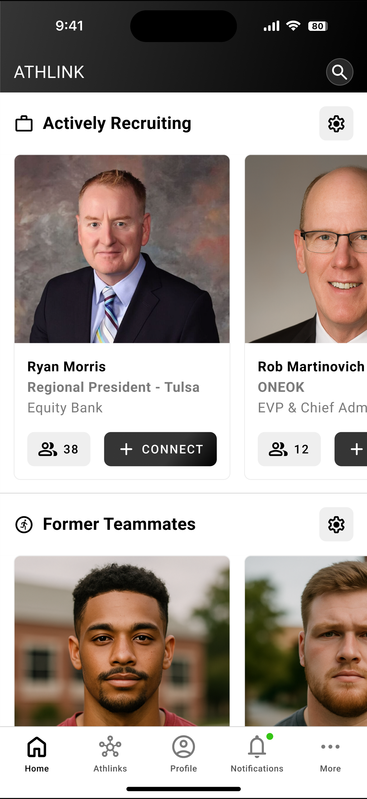
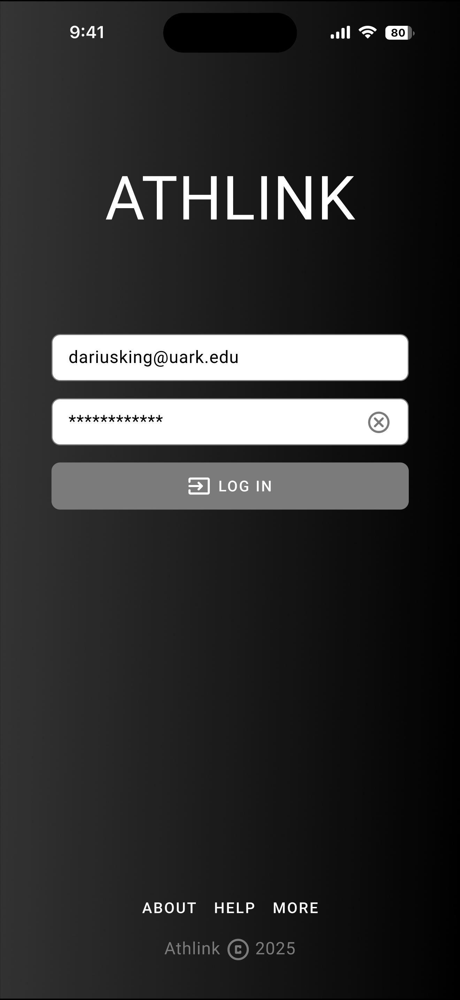
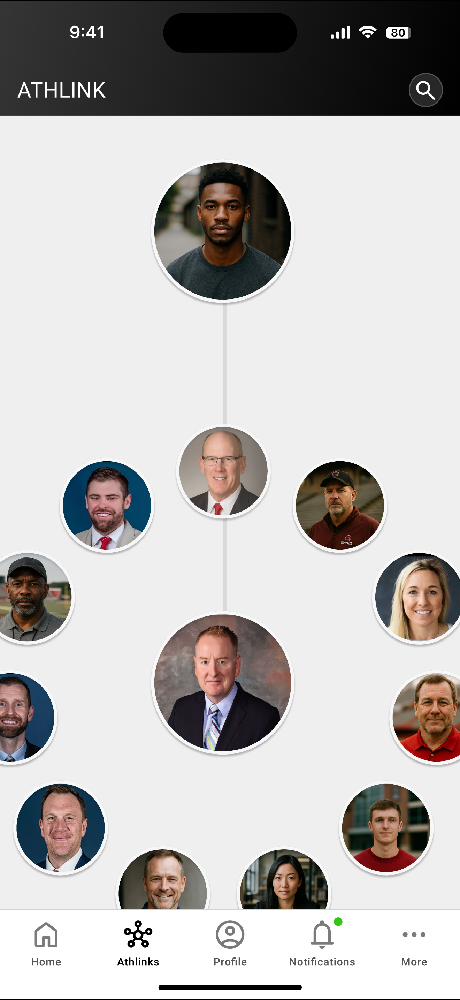
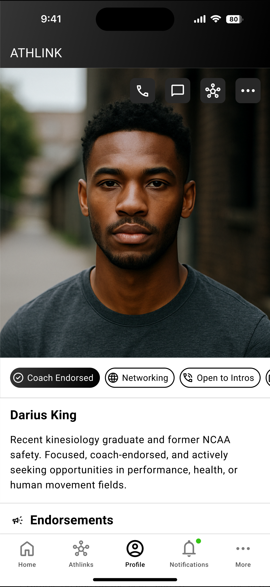

Product Story
AthLink
0–1 Product Architecture for a Curated Athlete Network

At a Glance
| Role | Independent Product Design Consultant |
|---|---|
| Engagement Type | Pre-Seed, 0–1 Product Architecture |
| Timeline | 2025 |
| Tools | Figma · Claude |
| Key Outcomes | Multi-role permission architecture defined · Trust model and governance established · Foundational design system delivered · Product repositioned toward curated high-trust network model · Engineering-ready roadmap handed off to founder |
Overview
AthLink is a pre-seed platform connecting former collegiate athletes with coaches, mentors, recruiters, and career opportunities in a high-trust, invite-only environment. By leveraging shared athletic legacies, it enables endorsements that carry real weight and opportunities that feel earned — not algorithmic.
As an independent consultant in the earliest phase, I collaborated with the founder to define the core architecture, ensuring scalability while preserving the exclusivity that makes the platform valuable. The engagement was scoped to deliver a clear, executable foundation for engineering handoff.
The Problem
Early strategy sessions surfaced the core tension: balancing network growth with trust. Unlike open platforms, AthLink's value depends entirely on verified, curated connections. Too open and it becomes LinkedIn. Too closed and it stagnates.
Three distinct user types each brought their own demands:
- Athletes needed fair pathways to opportunities without having to beg for visibility
- Coaches wanted to extend their legacy and track the impact of their endorsements
- Recruiters needed character signals over noise — verified credibility, not self-reported credentials
The architecture had to serve all three simultaneously without collapsing the trust model that made the platform worth building.
Approach
I synthesized founder insights into a multi-role permission system defining how athletes, coaches, mentors, and recruiters interact — and more importantly, how they don't. The system was built around invite-driven, relationship-based connections rather than open requests.

Key architectural decisions:
Endorsements as trust infrastructure
Endorsements aren't social gestures — they're the primary trust signal in the system. A coach endorsing an athlete triggers recruiter visibility in a way that self-promotion cannot. This distinction shaped every permission and flow downstream.
Legacy Trees
Coaches needed a way to track the downstream impact of their endorsements over time. Legacy Trees visualize this — who a coach endorsed, where those athletes landed, and what the chain of impact looks like. This turned coach engagement from a one-time action into an ongoing relationship with the platform.

Scenario-informed architecture
Rather than designing in the abstract, I modeled key interaction sequences: a coach endorses an athlete, recruiter visibility is triggered, an introduction is made, a hire closes. Working from real scenarios kept the architecture grounded in actual user behavior rather than theoretical permission models.
Mobile-first from day one
All flows were prototyped mobile-first. Athletes and coaches are not desk workers — the platform had to function in the context of their actual lives.
Key Components Delivered
Endorsement Badges
Coach-verified icons surfacing trust signals directly on profiles. Designed to reduce the open-network risk of unverified credentials while giving recruiters an immediate signal they can act on.
Profile Cards
Modular cards with role-specific fields — athlete major and endorsements, recruiter hiring tags, coach legacy metrics. Built for fast iteration and branding overlays without rebuilding core structure.

Foundational Design System
Component library established before engineering engagement to ensure scalable iteration without rework. Badges, profile cards, and core interaction patterns documented and handed off.
Project Materials
Handoff & Recommendations
The engagement concluded with a documented architecture and component foundation ready for engineering handoff. Recommendations to the founder:
- Protect the trust model above all else — every growth decision should be evaluated against whether it dilutes or strengthens the invite-only signal
- Instrument endorsement behavior early — endorsement velocity, downstream hire rates, and Legacy Tree depth are the metrics that will tell you if the trust model is working
- Resist open-network pressure — as the platform grows there will be pressure to open access; the architecture was designed to scale without that compromise
- Prioritize the coach relationship — coaches are the network's engine; their endorsement behavior drives athlete visibility and recruiter engagement. Features that serve coaches serve everyone
Reflections
The hardest product problem on AthLink wasn't the architecture — it was the positioning. An invite-only network for former collegiate athletes sounds niche until you map the actual user base: millions of former athletes, thousands of coaches with active recruiter relationships, and a recruiting industry starving for verified character signals.
The reframe — from "athlete networking app" to "curated high-trust professional network anchored in verified athletic legacy" — changed what the product needed to be and what it needed to protect. That positioning decision shaped every architectural choice downstream.